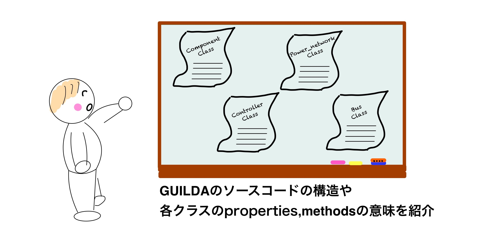

ソースコードの解説¶
GUILDAでは基本的には、ユーザーが直接呼び出して使うことを想定しているクラスや関数は冒頭に用途・使用方法をコメントすることをルールにしています。使用したいクラス・関数があれば一度、コードを開いて見ていただくか、help/doc関数を利用してみてください。
% sample.mの関数を調べたい場合。
help sample
doc sample
【実装クラス】¶
GUILDAを中心的な機能を担っているクラスは大きく分けて「電力系統モデル」「送電網モデル」「母線モデル」「機器モデル」「制御器モデル」を表現したクラスの5種類に分けられます。各クラスは以下に示す５つのスーパークラスの子クラスとして定義されています。ここでは、この5つのスーパークラスに実装されているメンバ変数やメソッドについて解説します。
その他のクラスに関しては、本ページでは解説されていませんが上述したようにhelp関数を実行することで、モデルの説明やメンバ変数の意味について確認することが出来ます。
例えば同期発電機の一軸モデルを表したgenerator_1axisクラスは、機器モデルを実装したcomponentクラスの子クラスになります。そのため、generator_1axisクラスがcomponentクラスから継承したメンバ変数やメソッドについては、以下のcomponentクラスの解説ページを参照して下さい。そして、generator_1axisで新たに定義されたメンバ変数などに関しては、
>> help generator_1axis
:fontawesome-solid-arrow-circle-right: power_network:電力系統モデルの大枠となるクラス¶
解析に必要なmethod各種が定義されています。
:fontawesome-solid-arrow-circle-right: branch:送電網を定義するクラス¶
アドミタンス行列の導出に必要なmethodなどが定義されています。
:fontawesome-solid-arrow-circle-right: bus：母線を定義するクラス¶
潮流計算に必要な制約条件を定義するmethodなどが定義されています。
:fontawesome-solid-arrow-circle-right: component：機器モデルを定義するクラス¶
機器の動特性や近似線形化モデルの導出に必要なmethodが定義されています。
:fontawesome-solid-arrow-circle-right: controller：制御器モデルを定義するクラス¶
観測信号から入力信号までの動特性を決めるmethodが定義されています。
IEEE68busモデルを例にした
power_networkクラスのデータ構造の解説¶
power_networkクラスのデータ構造の解説
GUILDAでは電力系統モデルをpower_networkというクラスの変数として定義する訳ですが、この章ではこのpower_networkクラスのプロパティの値を見て、どの様な電力系統モデルを実装しているのか想像できるようになることを目的としています。
↓clickして解説ページへ

Tips:クラスの検索 ¶
GUILDA上で実装されているクラスをリストとして見たい場合、本ソースコード内の"+func"内に検索する用の関数が設置されていますので参考にしてみてください。
実行例：
%引数がない場合handleクラスを継承しているクラスの一覧を表示
>> func.class_dictionary();
%特定のクラスのみ検索したい場合は引数にクラス名を指定します.
%例：'component'クラスの場合
>> func.class_dictionary('component');
引数なしの場合の実行結果例
Search : "handle" class．．．
handle class：
===================================================
Link class tree
===================================================
[help], [doc] handle
[help], [doc] ┣━ tools.simulationResult
[help], [doc] ┣━ tools.Reporter
[help], [doc] ┣━ power_network
[help], [doc] ┃ ┣━ network_IEEE68bus
[help], [doc] ┃ ┗━ network_sample3bus
[help], [doc] ┣━ avr
[help], [doc] ┃ ┣━ avr_IEEE_ST1
[help], [doc] ┃ ┗━ avr_sadamoto2019
[help], [doc] ┣━ branch
[help], [doc] ┃ ┣━ branch_pi
[help], [doc] ┃ ┗━ branch_pi_transformer
[help], [doc] ┣━ bus
[help], [doc] ┃ ┣━ bus_PQ
[help], [doc] ┃ ┣━ bus_PV
[help], [doc] ┃ ┗━ bus_slack
[help], [doc] ┣━ component
[help], [doc] ┃ ┣━ component_empty
[help], [doc] ┃ ┣━ generator_1axis
[help], [doc] ┃ ┣━ generator_classical
[help], [doc] ┃ ┗━ load_impedance
[help], [doc] ┣━ controller
[help], [doc] ┃ ┗━ controller_broadcast_PI_AGC
[help], [doc] ┣━ governor
[help], [doc] ┗━ pss
===================================================
"+function"ディレクトリの関数¶
このディレクトリでは、GUILDAを使用する上で作業効率化のため役に立ちそうな関数を保管しています。こちらも基本的には、コード冒頭に用途・使用方法を書くことをルールにしているため、help/doc関数を利用することで使い方が分かるようになっています。是非参考にしてみてください！
"+tools"ディレクトリの関数¶
このディレクトリには、GUILDAで実装されている。クラスや関数のコードの中で使われる関数を保管しています。頻繁に使用される実行内容のモジュール化や、ソースコードの一覧性を良くすることを目的に作成されています。そのため、このディレクトリの配下にあるコードはユーザーが直接使用する関数ではないため、本チュートリアルでの解説は省略させていただきます。